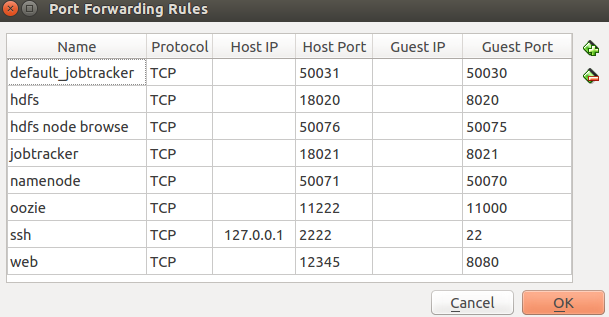

This document will describe how to connect a host to a SeqWare client that is running inside a local VirtualBox image. Please see this tutorial if you do not know how to start up an instance of SeqWare inside VirtualBox.
Now that you have an instance of SeqWare running inside VirtualBox…
You will want to set up your VirtualBox port forwarding so that your local client can access the services running withing the virtual machine.
Forwarded ports are:
| Used by | on host machine | in virtual machine |
|---|---|---|
| Oozie admin console | 11222 | 11000 |
| Seqware web service | 13245 | 8080 |
| HDFS | 18020 | 8020 |
| Jobtracker | 18021 | 8021 |
Optional: If you want to be able to browse the virtual machine’s HDFS, you should also set up these ports:
| Used by | on host machine | in virtual machine |
|---|---|---|
| Map/Reduce admin page | 50031 | 50030 |
| HDFS admin page | 50071 | 50070 |
| HDFS node browsing page | 50076 | 50075 |

The list of releases of SeqWare can be found here: https://github.com/SeqWare/seqware/releases
In your browser, the URL for a specific version’s script is: https://github.com/SeqWare/seqware/releases/doiwnload/1.1.0-beta.1/seqware
In your terminal, you can get it like this:
user@host:~$ curl -L https://github.com/SeqWare/seqware/releases/download/1.1.0-beta.1/seqware > seqwareCopy the script to a directory that is on your Path, such as ~/bin or /usr/bin.
user@host:~$ echo $PATH
/usr/local/sbin:/usr/local/bin:/usr/sbin:/usr/bin:/sbin:/bin:/usr/games:/usr/local/games:/usr/lib/jvm/java-7-oracle-clouderaYou may also need to make the script executable:
user@host:~$ chmod u+x seqwareNote:SeqWare will require Java 7. If on a machine where you can directly upgrade Java, use your favorite package manager (apt-get or yum) to download Java 1.7 and update your java bin to point to the new location.
If installing on your own: Download 1.7 JRE either from Oracle (Do not use the OpenJDK implementation). Unzip it in a stable location, like your home directory or on the Isilon mount. Set JAVA_HOME to be the root directory, and JAVA_CMD to be the direct location of the java executable.
If you have run SeqWare before on this machine, you will already have an existing ~/.seqware folder. If you don’t want to delete this folder, you can rename it for now.
user@host:~$ mv ~/.seqware ~./seqware.bkSeqWare can now generate your configuration file once it is in your path. Run seqware init to interactively generate a new seqware settings file. To determine the correct URL for the webservice, check the file ~/.seqware/settings on the host that is running seqware, and look for the value for the variable SW_REST_URL.
Note that the port number used here is 12345. This is because VirtualBox port forwarding is configured to forward requests on port 12345 (from the host machine) to port 8080 in the virtual machine.
If you want to test the URL, try navigating to http://localhost:12345/SeqWareWebService in your browser. If the service is running properly, you should be prompted to download a JSON file (the contents are a description of the current environment).
Don’t forget to set the default workflow engine to Oozie.
user@host:~$ seqware init
Initializing Seqware settings:
Seqware WebService URL: http://localhost:12345/SeqWareWebService
Seqware WebService Username: admin@admin.com
Seqware WebService Password: ****************
Default Workflow Engine [oozie]: oozie-sge
Created Seqware settings file at /u/someUser/.seqware/settings
Seqware is ready to use!If you are just scheduling workflows, you will not need to have anything else configured. But if you are either directly launching workflows or scheduling and then launching them on the same host, you will need the following in your seqware settings file.
OOZIE_SGE_MAX_MEMORY_PARAM_FORMAT=-l h_vmem=${maxMemory}M
OOZIE_SGE_THREADS_PARAM_FORMAT=
OOZIE_URL=http://localhost:11222/oozie
OOZIE_APP_ROOT=seqware_workflow
OOZIE_APP_PATH=hdfs://localhost:18020/user/someUser/
OOZIE_JOBTRACKER=localhost:18021
OOZIE_NAMENODE=hdfs://localhost:18020
OOZIE_QUEUENAME=default
OOZIE_WORK_DIR=$HOME/tmp
FS.DEFAULTFS=hdfs://localhost:18020
FS.HDFS.IMPL=org.apache.hadoop.hdfs.DistributedFileSystem
MAPRED.JOB.TRACKER=localhost:18021To schedule a workflow, use this command:
user@localhost:~$ seqware workflow schedule --accession 2 --host master
Created workflow run with SWID: 21Note: in the above command, the host specified is master. This is because the job will be scheduled within the virtual machine, and the hostname within the virtual machine is master. If you are not sure what is the hostname inside the virtual machine, log in and run the command hostname.